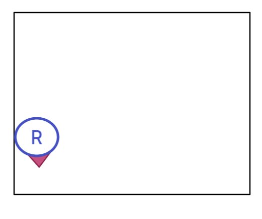

Interaction2021-HTTP-WS¶
Il progetto unibo.basicomm23 introduce le implementazioni
di Interaction2021 anche
per HTTP (HttpConnection) e per WebSocket (WsConnection) estendendo l’insieme
dei Tipi di protocollo che possiamo usare per realizzare la nostra astrazione
Interconnessione.
HttpConnection¶
La implementazione di Interaction2021 per HTTP non pone particolari problemi: si tratta di utilizzare una libreria che fornisce un HTTP-client.
Nel progetto unibo.basicomm23 usiamo la libreria org.apache.http, già introdotta in VirtualRobot23.
public class HttpConnection implements Interaction2021 {
private static HashMap<String, HttpConnection> connMap= new HashMap<String, HttpConnection>();
private HttpClient client = HttpClients.createDefault();
private String URL;
//Factory
public static Interaction2021 create(String addr ){
if( ! connMap.containsKey(addr)){
connMap.put(addr, new HttpConnection( addr ) );
}
return connMap.get(addr);
}
//Costruttore
public HttpConnection(String url) { URL = "http://" +url;}
HttpConnection.sendHttp¶
public String sendHttp( String msgJson){
...
HttpPost httpPost = new HttpPost( URL );
httpPost.setEntity(new StringEntity(msgJson));
HttpResponse response = client.execute(httpPost);
return EntityUtils.toString( response.getEntity() );
}
HttpConnection as Interaction2021¶
@Override
public String request(String msg) throws Exception {
return sendHttp( msg );
}
@Override
public void forward( String msg) throws Exception {
sendHttp( msg ); //answer ingnored
}
@Override
public void reply(String msgJson) throws Exception {
throw new Exception("HttpConnection does not implement reply");
}
@Override
public String receiveMsg() throws Exception {
throw new Exception("HttpConnection does not implement receiveMsg");
}
it.unibo.virtualRobot2023.EsperimentiHTTP¶
Per sperimentare l’uso del supporto, eseguiamo due test: uno relativo alla esecuzione con successo ed uno che provoca fallimento, dovuto a collisione.
Il codice ha sempre la forma che segue:
String addr = "localhost:8090/api/move";
Interaction2021 connHttp = HttpConnection.create(addr);
Long starttime = System.currentTimeMillis();
String forwardcmd = "{\"robotmove\":\"moveForward\",\"time\":\"1000\"}";
String answer = connHttp.request( forwardcmd );
double elapsed = (System.currentTimeMillis()-starttime)/1000.0;
CommUtils.outblue("doTestCollision | forwardcmd answer:" + answer + " time=" + elapsed);
Eseguiamo dunque il test ponendo il robot in due stati iniziali diversi.

|
Robot in HOME. La mossa termina con successo. answer = {"endmove":true,"move":"moveForward"} time=1.08
|
|  | Robot vicino a {"endmove":false,"move":"moveForward-collision"} time=1.071
|
Essendo la comunicazione sincrona, le risposte vengono sempre ricevute dopo la durata della mossa (1 sec).

WsConnection¶
La implementazione di Interaction2021 per WS (WebSocket) modifica la struttura del codice in quanto le interazioni sono asincrone.
Su una WS-connection possono cioè giungere informazioni che sono risposte a messaggi inviati in precedenza o anche di altro tipo (ad esempio dati di un sensore, allarmi, etc.).
Per meglio gestire queste informazioni in ingresso, questo tipo di connessione è stato realizzato come un POJO osservabile (che implementa IObservable), in modo da permettere al livello applicativo di gestire i messaggi in arrivo da parte di ossservatori che implementano IObserver.
unibo.basicomm23.ws.WsConnection¶
La classe WsConnection implementa il concetto di Interconnessione
(interfaccia Interaction2021)
su WebSocket, utilizzando la libreria javax.websocket.
@ClientEndpoint //Richiesto da javax.websocket
public class WsConnection implements Interaction2021, IObservable{
private static HashMap<String,WsConnection> connMap=new HashMap<String,WsConnection>();
private Vector<IObserver> observers= new Vector<IObserver>();
private Session userSession = null;
...
public static WsConnection create(String addr ){
//Crea una nuova connessione, memorizzandola in connMap
...
connMap.put(addr, new WsConnection( addr ) );
}
...
}
WsConnection come IObservable¶
Per permettere la gestione dei Messaggi di stato, questa connessione viene definita come observable, secondo l’interfaccia IObservable, e quindi definisce metodi per aggiungere e togliere observer applicativi.
@Override
public void addObserver(IObserver obs) { observers.add( obs); }
@Override
public void deleteObserver(IObserver obs) { observers.remove( obs); }
protected void updateObservers( String msg ){
observers.forEach( v -> v.update(null, msg) );
}
WsConnection il costruttore¶
Il costruttore privato realizza la connessione all’indirizzo dato.
private WsConnection(String addr) { //addr del tipo: localhost:8091
wsconnect(addr);
}
private void wsconnect(String wsAddr){
try {
WebSocketContainer container = ContainerProvider.getWebSocketContainer();
URI uri = new URI("ws://"+wsAddr);
container.connectToServer(this, uri);
} catch ( Exception ex) {...}
}
WsConnection: gestione degli eventi¶
Come richiesto dalla libreria javax.websocket, si definiscono metodi annotati per la gestione degli eventi
di apertura/chiusura di connessione e di ricezione di un messaggio.
@OnOpen
public void onOpen(Session userSession) { this.userSession = userSession; }
@OnClose
public void onClose(Session userSession, CloseReason reason) {this.userSession=null;}
@OnMessage
public void onMessage(String message) {
if (this.messageHandler != null) { this.messageHandler.handleMessage(message);}
}
Il metodo onMessage delega la gestione del messaggio ricevuto all’handler che
aggiorna gli observer applicativi.
WsConnection: sendMessage¶
Il metodo sendMessage incapsula i dettagli relativi all’invio di un messaggio sulla WS.
public void sendMessage(String msg ) throws Exception {
//this.userSession.getAsyncRemote().sendText(message);
this.userSession.getBasicRemote().sendText(msg);//synch: blocks until msg transmitted
}
WsConnection implementa Interaction2021¶
Le primitive di Interaction2021 sono realizzate usando sendMessage.
La realizzazione è parziale, in quanto viene esclusa la possibilità di realizzare operazioni sincrone, che verranno, nel caso, ottenute a livello applicativo, con l’intervento di observer in grado di gestire i Messaggi di stato.
@Override
public void forward( String msg) throws Exception {
sendMessage(msg);
}
@Override
public String request(String msg) throws Exception {
throw new Exception("WsConnectio: request not allowed");
}
@Override
public void reply(String msg) throws Exception {
forward(msg);
}
@Override
public String receiveMsg() throws Exception {
//Related to onMessage
throw new Exception("WsConnectio: receiveMsg not allowed");
}
@Override
public void close() throws Exception {
...
}
it.unibo.virtualRobot2023.EsperimentiWS¶
Per sperimentare l’uso del supporto, eseguiamo due test: uno relativo alla esecuzione con successo ed uno che provoca fallimento, dovuto a collisione.
Il codice ha sempre la forma che segue:
@Override
public void update(String msg) {
CommUtils.outmagenta("observerd ":msg);
}
String addr = "localhost:8091";
Interaction2021 connWs = WsConnection.create( addr );
connWs.addObserver(this); //applicazione che funge da observer sulla WebSocket
String forwardcmd = "{\"robotmove\":\"moveForward\",\"time\":\"1000\"}";
sendMessage( forwardcmd ); //ASINCRONO => no answer
Eseguiamo dunque il test ponendo il robot in due stati iniziali diversi.
|
|
Robot in HOME. La mossa termina con successo. observerd {"endmove":true,"move":"moveForward"}
|
Robot vicino a observerd {"collision":"moveForward","target":"wallDown"}
observerd {"endmove":false,"move":"moveForward-collision"}
|
Essendo la comunicazione asincrona, il Messggio di stato inviato da WEnv viene elaborato dall’osservatore posto sulla connessione.